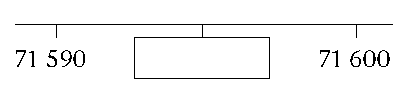
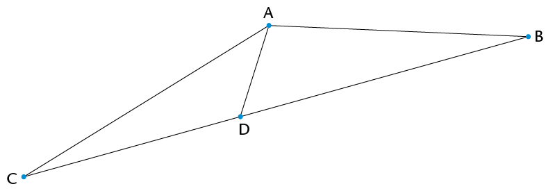
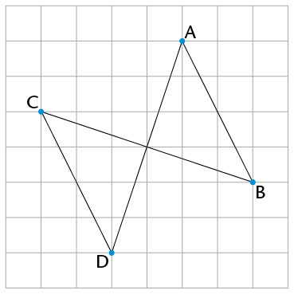
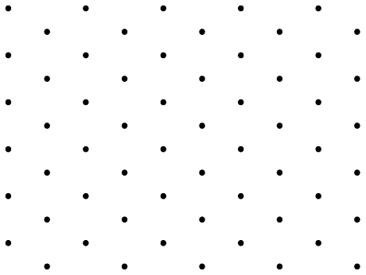

Kwartaal en assessering
Hersiening
Moenie 'n sakrekenaar vir enige van die vrae in hierdie afdeling gebruik nie. Wys jou stappe van berekening.
Werk met telgetalle
Maak die getallesinne hier onder waar. Skryf in die eerste blokkie in elke vraag 'n vermenigvuldigingsteken of 'n deelteken. Skryf 10, 100 of 1 000 in die tweede blokkie.
-
8 ☐ ☐ = 800
-
740 000 ☐ ☐= 740
-
-
Omkring al die getalle wat tot 60 000 sal afrond.
62 495; 54 498; 65 000; 56 002; 67 024
-
Bereken die volgende:
-
\(274 561 + 367 238\)
-
\(4 672 - 3 937\)
-
\(3 458 \times 43\)
\(6 624 \div 18\)
-
-
Skryf die ontbrekende getalle in die blokkies.
-
8; 15; 22; 29; ☐
- 
-
-
Tumi maak 'n getallery deur die volgende reël te gebruik:
"Neem die helfte van die vorige getal en tel dan 12 by."
Skryf die volgende drie getalle in die ry :
56; 40; 32;
-
Twee driesyfergetalle word hier onder bymekaargetel en die antwoord is 'n driesyfergetal - maar party van die syfers ontbreek. Vul die ontbrekende syfers in sodat die berekening korrek is.
59 ☐+ 3 ☐9=☐53
-
Ismail het die volgende getalle: 71; 72; 73; 74; 75; 76; 77; 78; 79; 80
Hy wil hulle sorteer volgens die sorteerdiagram hier onder. Help vir Ismail om die getalle in die regte blokke te sit.
Priemgetal
Nie 'n priemgetal nie
Veelvoud van 4
Nie 'n veelvoud van 4 nie
-
Identifiseer die volgende getalle in die wolkie en skryf hulle neer:

-
Al die priemgetalle
-
Al die kwadrate (of vierkantsgetalle)
-
Al die derdemagte
-
Al die veelvoude van 8
-
Al die faktore van 8
-
-
Juffrou Ramushwana sê:
"Elke ewe getal (groter as of gelyk aan 6) kan as die som van 'n paar (d.w.s. twee) onewe priemgetalle geskryf word, byvoorbeeld \(10 = 3 + 7\)."
-
Skryf twee pare onewe priemgetalle neer wat elk 'n som van 20 gee.
-
Kies enige ewe getal groter as 30 en skryf dit as 'n som van twee onewe priemgetalle.
-
-
Skryf die volgende as 'n produk van priemfaktore:
-
576
-
600
-
-
Bepaal (i) die GGD en (ii) die KGV van 576 en 600.
-
HCF
-
KGV (los jou antwoord as 'n produk van priemfaktore)
-
-
-
Hoeveel uur sal dit die Adams-gesin neem om hulle vakansiebestemming te bereik as dit 495 km ver is en hulle teen 'n gemiddelde spoed van 110 km/h ry?
-
Graeme, Thuli en Andile het die hele vakansie as 'n span gewerk om hulle bure se gras te sny. Hulle het 'n totaal van R1 200 verdien en nou moet hulle dit deel. Omdat hulle nie almal ewe veel gewerk het nie, stem hulle saam dat die geld in die verhouding 4 : 6 : 5 tussen Graeme, Thuli en Andile verdeel moet word. Hoeveel geld sal Thuli kry?
-
Meneer Khumalo besluit om geld te probeer maak deur gebruikte meubels te koop en verkoop. Hy het R6 000 in sy bankrekening en hy gebruik 'n deel van die geld om die volgende te koop: 'n ou bed en matras vir R800, 'n laaikas vir R2 500, twee sluitkaste vir R300 elk, en 'n wasmasjien vir R900.
-
Hoeveel is in sy bankrekening oor na hierdie aankope?
-
Hy verkoop die bed en matras vir R980, die laaikas vir R2 950, en albei sluitkaste vir 'n totaal van R750. Dit lyk egter of niemand sy wasmasjien wil hê nie. Op hierdie stadium het hy 'n verlies gely. Bereken sy verlies.
-
Vir hoeveel moet hy die wasmasjien verkoop om 'n algehele wins van R1 000 te maak?
-
-
Mevrou Steyn gaan 'n lening van R55 000 aan by Blink Bank. Die bank hef enkelvoudige rente van R500 per maand. Hoeveel geld sal mevrou Steyn na \(1\frac{1}{2}\) jaar skuld?
-
Jan verdien R480 op 'n Saterdag. Hy werk van 08:00 tot 14:00. Wat verdien Jan per uur?
Eksponente
Bereken.
-
\(12 \times 12\)
-
\( 8 \times 8 \)
-
\( 7 \times 7 \times 7\)
-
\( 3 \times 3 \times 3 \)
-
\( 6 \times 6 \times 6 \)
-
\( 13 \times 13 \)
-
-
Verduidelik wat die verskil tussen \(4 \times 3\) en \(4^3\) is.
-
Skryf \( 5^5\) in uitgebreide vorm.
-
Skryf die volgende in eksponensiële vorm:
-
\( 2 \times 2 \times 2 \)
-
\( 3 \times 3 \times 3 \times 3 \times 3 \times 3 \times 3 \times 3 \)
-
-
Skryf die getalle in eksponensiële vorm. Toets jou antwoorde.
-
81
-
10 000
-
-
Voltooi:
- 5 verhef tot die
tweede mag is
-
5 verhef tot die derde mag is
- 5 verhef tot die
tweede mag is
-
Bereken:
-
\( 7^2\)
-
\( 15^2\)
-
\(3^2 \times 4^2 \)
\(\sqrt{16}\)
-
-
Sê of elk van die stellings waar of onwaar is. Verduidelik jou antwoorde.
-
Die getal 64 kan as 'n kwadraat sowel as 'n derdemag geskryf word.
-
\( 2^5\) is kleiner as \(30^1\).
-
-
Bereken die volgende en gee redes vir jou antwoorde.
-
\(\sqrt[3]{216}\)
\(\sqrt[3]{8}\)
- \(\sqrt[3]{125}\)
\(\sqrt[3]{27}\)
-
-
Bepaal die waarde van elk van die volgende:
-
\( 3^2-2^3\)
\(4(10 - 1^{100})\)
\((8-2)^2\)
\(\sqrt{4} \times \sqrt{81}\)
- \((\sqrt{58})^2\)
\(\sqrt[3]{27} \div \sqrt{9}\)
\(10 \times \sqrt{81}\)
- \(\sqrt[3]{2
\times 32}\)
-
-
\(13^2=169; 14^2 =196; 15^2=225; 16^2=256; 7^3=343; 8^3=512; 3^3=27\)
Gebruik die feite hier bo om die waarde van elk van die volgende te bereken:
-
\(\sqrt{196}-\sqrt[3]{512}\)
\(\sqrt{169 \times 225}\)
- \(\frac{\sqrt{196}}{\sqrt[3]{343}}\)
\(\frac{14^2- 13^2}{3^3}\)
-
-
Indien \(56^3= 175 616\), skryf die waarde van \(\sqrt[3]{175 616}\) neer.
Meetkunde van reguit lyne
-
Kyk na die rooster hier langsaan.
-
Is PS 'n lyn, halflyn of lynstuk?

-
Teken op die rooster 'n lynstuk deur R wat loodreg is op PS. Merk dit TU.
-
Teken op die rooster 'n lyn wat ewewydig is aan PS. Merk dit WX.
-
-
Kyk na die diagram en gee die korrekte meetkundige name vir AB en CD.

AB:
CD:
-
Daar is 'n meetkundige verwantskap tussen lynstukke PR en QS wat in die diagram gewys word. Beskryf die verwantskap deur die korrekte woorde op die stippellyn in te vul:

PR is ____________ QS.
-
Trek 'n halflyn en 'n lyn wat nooit sal kruis nie.

Konstruksie van meetkundige figure
Gebruik 'n gradeboog om die volgende hoeke in die diagram akkuraat te meet en skryf die antwoorde in die tabel:
-
\(\hat{B}\)
\(A\hat{D}B\)
\(D\hat{A}B\)
\(C\hat{D}B\)
inspringende \(C\hat{A}B\)

Hoek se naam
Grootte
Klassifikasie
\(\hat{B}\)
\(A\hat{D}B\)
\(D\hat{A}B\)
\(C\hat{D}B\)
Inspringende \(C\hat{A}B\)
Inspringende hoek
-
Konstrueer 'n halfsirkel met 'n radius van 3 cm.
-
Gebruik 'n liniaal en 'n gradeboog om die volgende twee hoeke hier onder te konstrueer. Merk die hoeke korrek.
-
\(E\hat{F}G = 152^\circ \)
\(X\hat{Y}Z = 289^\circ\)

-
-
Gebruik sirkels om twee lyne, CD en EF, te konstrueer wat ewewydig is aan lyn AB hier onder. Lyn CD moet bokant lyn AB wees en lyn EF onder lyn AB. Merk albei lyne.

In hierdie diagram is daar een paar loodregte lyne. Watter lyne is dit?

Meetkunde van
Gee die volle naam van die figuur wat by die beskrywing pas:
-
'n Driesydige figuur waarvan presies twee sye ewe lank is
-
'n Viersydige figuur waarvan beide pare teenoorstaande sye ewewydig en ewe lank is, en wat geen regte hoeke het nie
-
'n Viersydige figuur waarvan net een paar teenoorstaande sye ewewydig is
-
-
Wat is die korrekte term vir elk van die volgende dele van die sirkel met middelpunt B, wat hier gewys word?

Lyn AB
-
Die ingekleurde oppervlakte
-
Op hierdie vierkantrooster is daar twee sye van 'n vlieër geteken. Gebruik 'n liniaal en voltooi die vlieër op die rooster.

-
Darrel sê, "Die viersydige figure waaraan ek dink het almal minstens een paar aangrensende sye wat ewe lank is. Waaraan dink ek?" Skryf die name van al die figure neer wat by sy beskrywing pas.
-
DEFG is 'n vlieër, en DE = 4 cm en EF = 5,2 cm.
Skryf die lengtes van DG en GF neer.
-
STUV is 'n reghoek. Skryf die waarde van \(\hat{T} + \hat{V}\) neer. Gee 'n rede vir jou antwoord.
-
Kyk na die diagram hier regs.

Skryf die letter(s) neer van die figuur of figure wat kongruent is aan figuur B..
-
Skryf die letter(s) neer van die figuur of figure wat gelykvormig is aan figuur B.
-
'n Gelykbenige driehoek, LMN, het LM = 4 cm en 'n omtrek van 16 cm. Ondersoek die moontlike lengtes van MN en LN en skryf hulle almal neer.
-
Is die sye wat hier onder genoem word teenoorstaande sye of aangrensende sye van vierhoek DEFG?

GD en DE
-
DE en GF
Assessering
In hierdie afdeling dui die getalle tussen hakies aan die einde van 'n vraag aan hoeveel punte die vraag werd is. Gebruik hierdie inligting om jou te help besluit hoeveel werk nodig is by elke vraag.
Die totale getal punte wat aan hierdie assesseringtoegeken word, is 60.
Let wel: Moenie jou sakrekenaar gebruik nie!
Hier is vyf eensyferkaarte:

Tweesyfergetalle kan gemaak word deur twee kaarte langs mekaar neer te sit. As jy byvoorbeeld die 1 en die 2 langs mekaar neersit, maak jy die getal 12 (twaalf).
Kies elke keer twee kaarte om die volgende tweesyfergetalle te maak:
'n Onewe getal
-
'n Veelvoud van 9
-
'n Faktor van 126
-
'n Vierkantsgetal (of kwadraat)
-
Ayanda het 'n pak kaarte wat van 1 tot 16 genommer is. Hy kies ewekansig vier kaarte uit die pak:
- Een is 'n faktor van 39.
- Twee is veelvoude van 4.
- Drie is ewe getalle.
- Die totaal van die vier getalle is meer as 45, maar minder as 50.
Skryf die waardes van die vier getalle neer.
-
Al 769 leerders van Laerskool Sibanye gaan na 'n atletiekbyeenkoms toe. Die skool huur busse by 'n plaaslike maatskappy. Elke bus het net plek vir 52 passasiers en elke bus moet twee onderwysers aan boord hê.
Hoeveel busse sal die skool moet huur om almal by die byeenkoms te kry?
-
Bereken die totale getal toetspaaltjies wat die vier beste paaltjienemers in die geskiedenis van die Protea krieketspan gekry het (syfers korrek in Junie 2013):
- Shaun Pollock: 421
- Makhaya Ntini: 390
- Dale Steyn: 332
- Allan Donald: 330
-
Bepaal die KGV van 42 en 18.
-
Dintle se gesin moet om 11 vm. in Polokwane, wat 330 km van hulle huis af is, wees. As hulle om 7.40 vm. vertrek en teen 'n gemiddelde spoed van 100 km/h ry, sal hulle betyds hulle bestemming bereik? Wys al jou berekeninge.
-
Bepaal die waarde van elk van die volgende:
-
\( 6^3 - (7^2 + 6^2)\)
\((8-5)^3\)
\((\sqrt[3]{125})^2\)
\(12^2 - 4\sqrt{121} \div 2^2\)
\(3\sqrt{64}\)
-
-
Skryf die letter(s) van al die skerphoeke in die diagram neer.

Meet die grootte van hoek \(d\) in die diagram en skryf dit neer.
-
Klassifiseer hoek \(d\) volgens sy grootte.
-
-
Konstrueer hoek KLM = 168° en merk dit op die korrekte manier.

Gebruik jou liniaal en gradeboog om 'n lyn te trek wat ewewydig is aan lynstuk FG hier onder en wat deur punt H gaan.

Vier sirkels is so geteken dat hulle netjies in 'n vierkant met sylengte van 6 cm pas, soos hier onder gewys (nie op skaal nie). Skryf die radius van elke sirkel neer.

-
Wat is die meetkundige naam van die figuur op die rooster hier onder?
-
Teken enige plek op die rooster twee figure wat gelykvormig is aan die figuur hier onder. Elke figuur wat jy teken moet 'n ander grootte hê.

-
-
Die diagram wys 'n vierkant wat op 'n rooster geteken is. Die vierkant is in vier driehoeke verdeel, naamlik A, B, C, en D.

-
Skryf die letters van al die reghoekige driehoeke neer.
-
Skryf die letters van al die gelykbenige driehoeke neer.
-
Skryf die letters van die twee kongruente driehoeke neer.
-
-
Ek is 'n vierhoek met twee pare teenoorstaande sye ewe lank, geen aangrensendesye wat gelyk is nie en geen regte hoeke nie. Watter soort vierhoek is ek?
-
Gee een woord vir "die afstand rondom 'n sirkel".
-
Teken 'n ruit van enige grootte op die rooster hier onder. Voeg gepaste simbole op die diagram by om te wys dat die teenoorstaande sye van 'n ruit ewewydig is.

In trapesium JKLM is JK ewewydig aan die teenoorstaande sy.
Voltooi die volgende:
JK ||
-
Bestudeer die diagram:

Kies die regte antwoorde deur 'n streep deur die verkeerde woorde en simbole te trek:
AD is (ewewydig aan/loodreg op) BC. Dit kan soos volg in simbole gewys word:
(AD \(\perp\) BC / AB || BC).